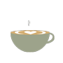

De Pllek
De Pllek is een duurzaam initiatief in Amsterdam. Zij hebben een menu waarvan 75 % bestaat uit vegatarische gerechten en 25% bestaat uit veganistische producten. Ook hebben ze specifiek hun leveranciers uitgekozen op basis van de visie die zij hebben. Ze proberen zo veel mogelijk lokale leveranciers te krijgen. Als je de Pllek bezoekt merk je dat ze in hun interieur ook het een en ander hebben gedaan. Zo hebben zij bijvoorbeeld wanden gebruikt van een loods. Als je binnenkomt stap je eigenlijk in een loods.
